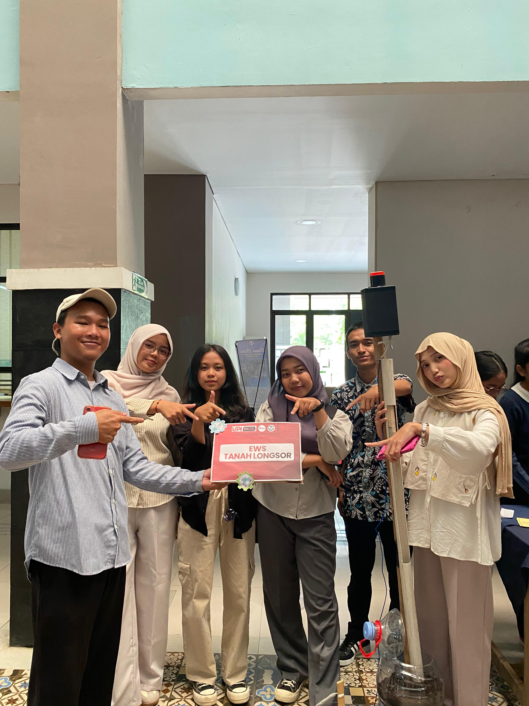
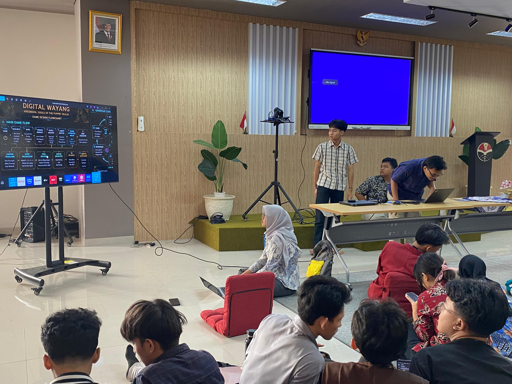

Berikut ini adalah beberapa project sederhana yang pernah atau sedang saya kerjakan.

Alat ini dibuat untuk mendeteksi terjadinya longsor. Ketika longsor terjadi maka alat tersebut akan menghasilkan bunyi yang bersumber dari alarm yang dipasang.

Pada project ini kelas 1A PSTI 2025 membuat sebuah miniatur taman yang di mana terdapat lampu yang bisa menyala ketika keadaan gelap dan mati ketika keadaan terang. Mata kuliah ini juga diampu oleh Bu Dian.

Pada project ini kelas 2A PSTI 2025 membuat sebuah game yang dikerjakan satu kelas di mata kuliah Analisis dan Perancangan Sistem Informasi yang diampu oleh Bu Dian.
| Ringkasan Portofolio Project | |||
|---|---|---|---|
| No. | Nama Project | Detail Project | |
| Teknologi | Status | ||
| 1 | Alat Deteksi Longsor | Sistem IoT | Selesai |
| 2 | Prototype Miniatur Taman dengan Sistem Lampu Otomatis Berbasis LDR | Sensor Gerak | |
| 3 | Game: Kreswara | CSS & Java | |
Tertarik berdiskusi? Hubungi saya
© 2026 Alyya Deliani Yusuf